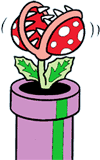

あるところに、ピラプト王国、ミューダ王国、イーストン王国、チャイ王国の4つの国からなるサラサ・ランドという平和な世界がありました。ある日のこと、1日にしてサラサの上空は真っ黒い雲に覆われてしまいました。そして雲の切れ間から突如現れたのが、サラサ・ランド
征服をもくろむ正体不明の宇宙怪人タタンガでした。タタンガは、各王国の住民たちに宇宙催眠をかけ、自分の思うがままにあやつり、サラサを乗っ取ってしまいました。 あるところに、ピラプト王国、ミューダ王国、イーストン王国、チャイ王国の4つの国からなるサラサ・ランドという平和な世界がありました。ある日のこと、1日にしてサラサの上空は真っ黒い雲に覆われてしまいました。そして雲の切れ間から突如現れたのが、サラサ・ランド
征服をもくろむ正体不明の宇宙怪人タタンガでした。タタンガは、各王国の住民たちに宇宙催眠をかけ、自分の思うがままにあやつり、サラサを乗っ取ってしまいました。しかも、サラサのデイジー姫を奪い近々自分のきさきにするとのことです。このことを知ったマリオは、サラサ・ランドに平和を取り戻すため、デイジー姫の捕らえられているとゆうチャイ王国を目ざして旅立ちました。はたしてマリオは、タタンガを倒してみんなを宇宙催眠から解き、無事デイジー姫を救い出すことができるのでしょうか。すべては、マリオとあなたの腕しだい。 ガンバレマリオ、それゆけマリオ！ |